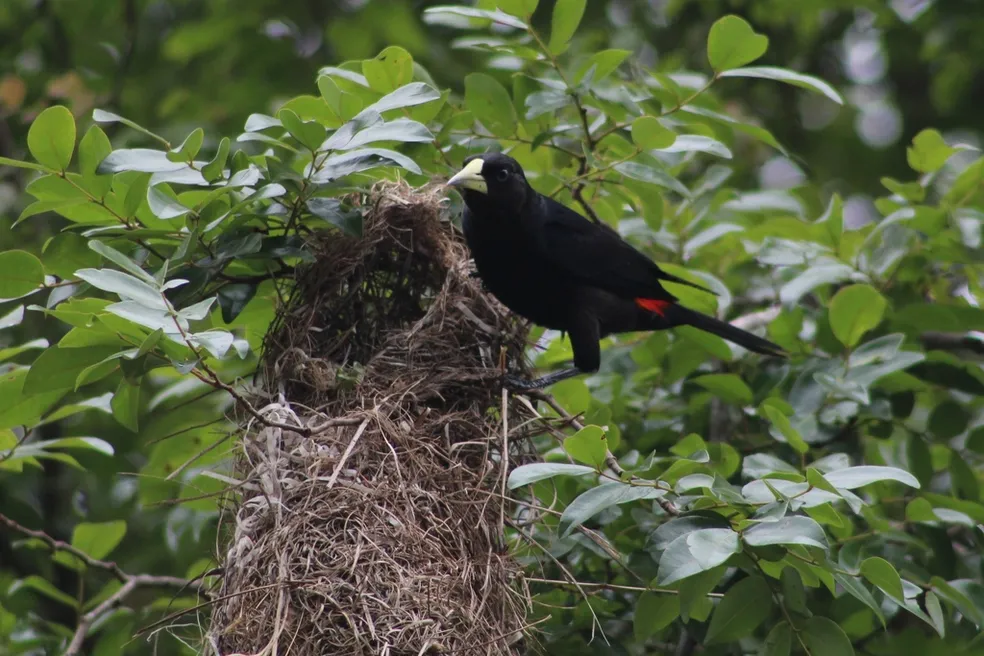

Os 'engenheiros' da natureza e suas habilidades extraordinárias
É fato que, na natureza, os animais que sobrevivem são os que conseguem se adaptar melhor às mudanças ocorridas ao longo dos anos. A capacidade de evitar predadores e obter alimento são fatores cruciais para a reprodução das espécies. E as formas como essas espécies encontram para se proteger podem, muitas vezes, impressionar.
Um exemplo disso são os xexéus (Cacicus cela) que, com frequência constroem seus ninhos em árvores próximas a vespeiros. Seus ninhos ficam pendurados em galhos e possuem a estrutura parecida com uma bolsa, sendo feitos de folhas de palmeiras, gravetos e capim. "A predação de ovos e filhotes é uma das mais importantes causas de mortalidade entre as aves de florestas tropicais. Para proteger seus ninhos de predadores as aves investem em diferentes estratégias. Algumas aves da família Icteridae, como o guaxe e o xexéu, exibem não apenas uma, mas várias adaptações para proteger seus ninhos.
Essas espécies nidificam em grandes colônias em uma mesma árvore, diminuindo assim a chance de predação de um ninho específico. Tanto o guaxe quanto o xexéu também encontram proteção na arquitetura dos seus ninhos. São longas bolsas muito bem trançadas que ficam pendentes nos galhos mais finos no topo das árvores, limitando muito o acesso de predadores”, afirma ornitólogo Luciano Lima.
Os guaxes (Cacicus haemorrhous), diferentemente dos xexéus, têm seus ninhos feitos somente pelas fêmeas da espécie, também em colônias. Eles possuem de 40 a 70 centímetros e, igualmente aos xexéus, são construídos em formato de bolsa em altos galhos de árvore. Normalmente, são feitos com partes de plantas.
Os tecelões (Cacicus chrysopterus) e os japus (Psarocolius decumanus) também fazem parte dessa família. Os tecelões constroem seus ninhos com a precisão de uma máquina. Os abrigos têm aproximadamente 58 centímetros de comprimento e são construídos geralmente em palmeiras e acácias espinhosas, dificultando possíveis ataques de predadores.
Os japus, por sua vez, constroem seus ninhos em colônias, preferindo geralmente as árvores isoladas nas bordas das florestas ou clareiras. Seus lares podem estar localizados perto de outras espécies de japu, mas não exatamente na mesma árvore. Na colônia, a proteção do território fica por conta de um macho dominante.
Autor(a): Mariana Freire
Data de Publicação: 01 de julho de 2023